Welcome
This site provides information and guides for development using PallyCon products and service.
PallyCon service consists with cloud-based DRM license server, PallyCon Player for DRM content playback, and PallyCon Packager for content encryption. To use PallyCon service, each modules must be integrated with your content service. You can apply DRM without SDK development or server preparation.
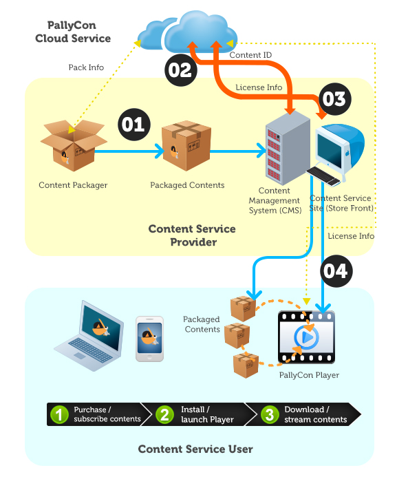
Guides
You can integrate PallyCon service with your content service site using the below guide documents.
Quick Start Guide Provides test codes, samples and setup guide for a quick trial of PallyCon service.
Intergration Guides Explains overall flow and how-to of the service integration.
You must intergrate packager to your CMS(Content Management System). And learn how to issue license with usage rights when end-user plays DRM content.
You can intergrate Pallycon Mobile Player with your mobile content service site.
Also You can manage your Pallycon service via ReST API
Downloads
For Quick Start, please download the below sample and refer to Quick Start Guide page. For CMS integration, please download ‘Packager’ which includes Application and CLI packager for Windows and Linux.
QuickStart Guide
Introduction
Quick Guide is a guide about using the samples provided by PallyCon Service. You can see that a simple Web page can call PallyCon Mobile Player to play video streaming or download a video for local play.
You can download the sample at the following link.
By applying these samples, you can understand which tasks are needed for applying PallyCon Service and how the service is provided.
Necessary Conditions
In order to install the sample, run it, and perform a service query, you must complete Service Site Request after joining. If the service site is successfully requested, you can see the Site ID and Site Key of the service site, Packager Key, and the PC Web Player Key.
The sample pages are .jsp files. To modify or use these pages, you need Java and Tomcat. You must install Java Runtime Environment (JRE) that distributes and supports Java in Java 6 (1.6) and Java 7 (1.7) application and server environment.
You can download Java and Tomcat through the following links.
- Java: http://www.oracle.com/technetwork/java/javase/downloads/index.html
- Tomcat: http://tomcat.apache.org/
Opening the Setup Files
PallyCon_QuickStartSample.zip contains the below.
| Folders or Files | Description |
|---|---|
| sample.war | contains sample source codes |
| CloudApplicationPackager.zip | Cloud Application Packager file |
Sample.war Structure
| Folders or Files | Description |
|---|---|
| /src/aes/ | This folder contains aes256 and base64encode source sample files. |
| /images | This folder contains image related files used in the content_list.jsp page. |
| /js | This folder contains jquery related files used in the content_list.jsp page. |
| /WEB-INF/classes/aes/ | aes256 class sample, base64encode class sample |
| /WEB-INF/lib | jar file required for sample |
| /ServiceSite/aes_ok.jsp | page file for encrypting parameters with aes256 |
| /ServiceSite/service_manager.jsp | Service Site page file |
| /ServiceSite/service_manager_pc.jsp | PC Service Site page file(includes Bookmark, LMS management) |
| /ServiceSite/config.jsp | config file for running the trial |
| /ServiceSite/content_list.jsp | Mobile Web sample page file |
| /ServiceSite/content_list_pc.jsp | PC Web sample page file |
| /CIDIssue_RightsInfo/CIDIssue.jsp | CID issue page file |
| /CIDIssue_RightsInfo/ContentUsageRightsInfo.jsp | Content Usage Info page (Content Usage Info gateway) file |
CloudApplicationPackager.zip Structure
| Folders or Files | Description |
|---|---|
| Bin/PallyCon_packager.exe | Application executable file |
| Bin/Setting.ini,images | Data files for application |
| Release_Note.txt | Application change logs |
Installation and Contents Preparation
This document describes the process for developing a sample service using the sample files provided by PallyCon Service.
Installing Files and Modifying Contents
Step1: Copy the Web page.
Decompress the sample file and copy the files in the Webcontents folder to $TOMCAT_HOME/webapp/ROOT/.
Step2: Install bouncycastle JCE.
aes256 configuration
Decompress the sample file and copy the files in the Webcontents folder to $TOMCAT_HOME/webapp/ROOT/.
You must have installed bouncycastle JCE to run the StringEncrypter.class among the attached class files.
Content Usage Info Page
Set the information for using DRM-applied contents. PallyCon Player(Mobile, PC) does not support content playback with count-limited license.
| License Rules | LIMIT | PD_START | PD_END | COUNT |
|---|---|---|---|---|
| Count System | Y | Empty | Empty | Value greater than 0 |
| Period System | Y | Date before PD_END | Date after PD_START | Empty |
| Period System+Count System | Y | Date before PD_END | Date after PD_START | Value greater than 0 |
| No Limit | N | Empty | Empty | Empty |
| ————— | —- |
Date: GMT (YYYY-MM-DDThh:mm:ss)
content_list configration
Set the information required for playing and downloading DRM contents. - sSite_ID: The site ID that has been issued in the PallyCon Admin page. - sSite_Url: Current server IP and domain - sContent_Url1: File name of the first content in the list - sContent_Url2: File name of the second content in the list - sContent_Url3: File name of the third content in the list
Step4: Set URL in PallyCon CP Admin.
Set the URL of CIDIssue.jsp to the Content ID Issue Page URL in PallyCon CP Admin, and set the URL of ContentUsageRightsInfo.jsp to the Content Usage Rights Info Page URL.
- URL of CIDIssue.jsp: http://IP:8080/sample/CIDIssue_RightsInfo/CIDIssue.jsp
- URL of ContentUsageRightsInfo.jsp: http://IP:8080/sample/CIDIssue_RightsInfo/ContentUsageRightsInfo.jsp
Packaging and Preparing DRM contents
You can use Packager to encrypt source contents and package them to an .ncg file.
Step1: Run Packager.
- Decompress the attached packager.zip file.
- Run the NCG_Packager_Cloud.exe file.
Step2: Set Packager.
Enter the Site Key and Packager Key that you can check in PallyCon CP Admin.
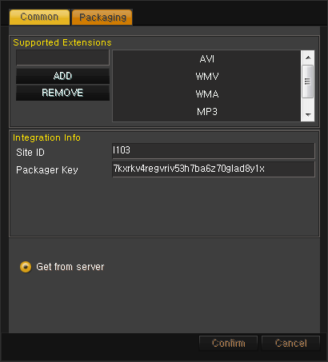
Step3: Run packaging.
Select three MP4 files to test and click the start packaging button to package the files.(Click Button marked NO.8)
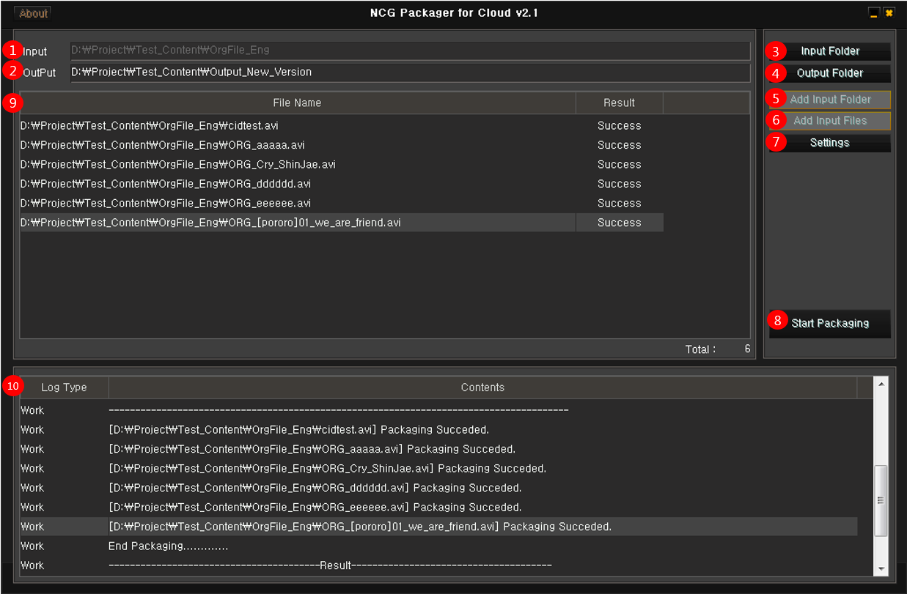
Step4. Set the contents file that has been packaged.
When packaging is completed, the source contents (MP4) are changed to DRM contents (NCG).
- Store the DRM contents in
/$TOMCAT_HOME/webapp/ROOT/ServiceSite/cont. - Change the sContent_url1, 2, and 3 values of config.jsp using the URL information of the corresponding contents.
Running
Install PallyCon Mobile Player
You can install PallyCon Mobile Player through App Store or Google Play.
Streaming, Downloading, and Local Playback
You can run PallyCon Mobile Player by calling it from Web browser.
Streaming
When you touch the Play button in the Mobile Web sample page, PallyCon Mobile Player is called and streaming begins.
Download
When you touch the Download button in the Mobile Web sample page, PallyCon Mobile Player is called and download starts.
Local playback
You can see the downloaded DRM content in the list. When you touch a desired content in the list, local playback starts.
Checking Details of Use:
On the PallyConCPAdmin page, you can see information about the licenses that were issued during a simple test, as well as the registered devices and packaged contents.
Revision History
This table describes the revisions of the Quick Guide.
| Date | Detail |
|---|---|
| 2014.08.28 | Quick Guide was created |
Integration Guide
Integraion Overview
About PallyCon Service
The PallyCon Service is provided to allow vendors to service secured (DRM) contents or source (non-DRM) contents that they have.
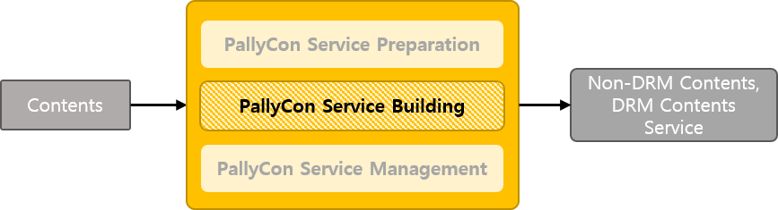
The DRM solution used in PallyCon Service can be applied to all files. However, PallyCon Service only services video contents. To apply DRM to other types of files, you must implement it using the SDK.
PallyCon Service consists of ‘Packaging’, 'PallyCon Cloud Service Site’, and 'Player’.
- Packaging: Source contents are converted to DRM contents.- PallyCon Cloud Service Site: The information required for creating or servicing DRM contents is provided.
- Player: This player plays DRM contents.
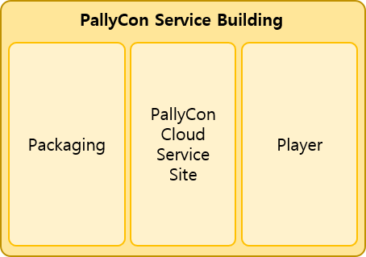
For packaging, PallyCon Service provides Packager. Furthermore, Player provides PC Web Player and Mobile (iOS, Android) Player.
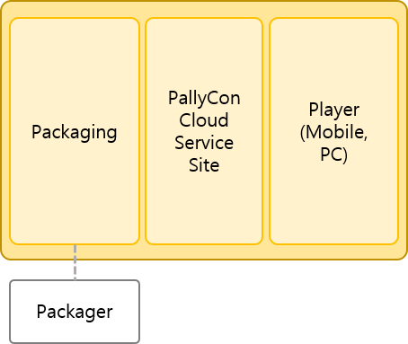>
PallyCon Service must be provided by reflecting the service policy of the vendor. The service policy of the vendor is reflected as follows:
- The policy is reflected by assigning the ID of the DRM contents (CID, Content ID) in Packaging. The CID can be assigned by developing a CID issue page or by direct input.
- The policy is reflected by determining the content usage information when the DRM contents are used in Player that services the DRM contents. The content usage information is composed of play period and play count which can be determined by developing the Content Usage Rights Info Page.
- The policy is reflected by setting Player in line with the service policy. You can set the policy in Player by interconnecting the Service Site Page and the Player.
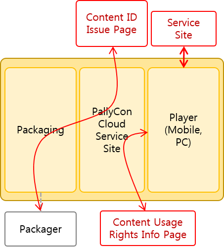
PallyCon Service Scenario
This document explains the PallyCon Service Scenario through the content flow when a vendor services DRM contents.
Packaging
The first thing to do for DRM service is packaging the source contents. Packaging is done by Packager. Packager receives a CID, creates a CEK, and then converts the source contents to DRM contents. When the conversion is completed, the CEK and the CID are sent to the PallyCon Cloud Service Site, which completes packaging.
The converted DRM contents are uploaded to the download server (CDN) to prepare for service.
DRM Service through Player
A license is required when a player is to use the DRM contents in the download server. License is created by the PallyCon Cloud Service Site and issued to the player. When a license is created, the CID and CEK which are stored in the PallyCon Cloud Service Site and the content usage information in the Content Usage Info Page are used.
Upon receiving a license, the client converts the DRM contents to the source contents before using them.
PallyCon Service Building Scenario
The PallyCon Service must be set up in the following squence.
STEP1: Select Packager to prepare for packaging.
STEP2: Develop the Content ID Issue Page and register the URL in CP Admin.
STEP3: Package the source contents.
STEP4: Upload the packaged DRM contents to the donwload server.
STEP5: Develop the Content Usage Rights Info Page and register the URL in CP Admin.
STEP6: Develop the Service Site for linking with the player.
STEP7: Start the service.
PallyCon Service provides the Guide documents for the setting up procedure.
Packaging Guide
This guide is for STEP1 ~ STEP4. This guide document describes the packaging method, the CID issue page development procedure, and cautions.
License Issue Guide
This guide is for STEP5. This guide document provides information and cautions about the license required for using DRM contents, the creation and issuance of license, and the development of the content usage information page.
Web Working Guide, Mobile Working Guide
This guide is for STEP6. This guide document explains the interconnection tasks required for using Web Player and Mobile Player provided by PallyCon Service.
Revision History
This table describes the revisions of the Overview Guide.
| Date | Detail |
|---|---|
| 2014.08.27 | Overview Guide was created |
Packaging Guide
Introduction
This document is a guide for adding DRM contents to the CMS(Contents Manager System) which is the first task for starting a DRM service by a vendor.
DRM Packaging
To provide a DRM service, the vendor must add the DRM contents to their Contents Manager System (CMS). You can obtain DRM contents by converting (packaging) source contents to CRM contents.
You need Packager to convert source contents to DRM contents. The PallyCon Cloud Service Site provides Cloud Application Packager and Cloud CLI Packager for packaging.
- Cloud Application Packager : This packager is an application with UI. This program is provided as an application and can be used only in Windows.
- Cloud CLI Packager : This Cloud CLI(Commend Line Interface) Packager is provided for interconnection with the CMS solution of the vendor. It can be used in Windows and Linux.
Use of this Document
This document describes the Packaging/DRM Service Scenario and how to use Packager for applying DRM to source files.
This description allows you to:
- understand the cautions about packaging
- get useful information for managing DRM contents, and
- better understand the entire DRM service scenario of a vendor as well as the service scenario of a player.
Necessary Conditions
Before starting this task, developers must have:
- site ID, packager key, and site key issued from the PallyCon Service Site.
- understanding of the total flow of the PallyCon Service by reading the Quick Start Guide.
- knowledge and application techniques for HTTP(s) communication and AES encryption which are required for development.
Application Procedure
STEP1: Carefully read this document at least once in order to learn about Packager.
STEP2: Determine the Content ID (CID) creation policy.
STEP3: Select the CID issuing method between direct input of CID and linking with the CID issue page.
[CASE1: Select the direct input of CID - Only possible with Cloud CLI Packager.]
STEP4: Develop the interconnection with the Cloud CLI Packager so that CIDs will be inputted to the CMS solution.
[CASE2: Select linking with the CID issue page - Possible with both Cloud CLI Packager and Cloud Application Packager.]
STEP4: Develop the CID issue page in accordance with the CID issue interconnection standard in this document.
STEP5: Register the CID issue page address as the Content ID Issue URL of CP Admin.
STEP6-Cloud CLI Packager : Develop the interconnection with the Cloud CLI Packager so that CIDs will not be inputted to the CMS solution.
STEP6-Cloud Application Packager
STEP6-1: Run Cloud Application Packager.
STEP6-2: Enter the site ID and packager key in the Environment Settings Window.
STEP6-3: Enter the file path for packaging and start Packaging.
STEP6-4: Upload the packaged DRM contents to the download server.
Scenario
This document describes the source contents packaging scenario and how the packaged DRM contents are serviced.
By reading this description, you will understand the importance of content ID (CID), how CID and CEK are generated, and where they are used.
Packaging Scenario
Packaging scenario varies by whether the CID is directly inputted or issued from the content ID issue page. Both packagers used for packaging receives the input of Site ID, Packager Key, Source Path, and Destination Path. For the Cloud CLI Packager, you can directly input the CID.
- Site ID, Packager Key: These values are used when authorizing the used Packager in the PallyCon Cloud Service Site.
- Source Path: This is the path of the source contents.
- Destination Path: This is the path of the packaged DRM contents.
The CID that is directly entered by a vendor or issued on the Content ID Issue page is 28 bytes long. This Content ID is combined with the Site ID that is entered by the vendor on the PallyCon Service Site, and the content ID used for packaging becomes 32 bytes long.
Content ID Conversion
- User input: Content ID (28 byte)
- PallyCon Cloud Service Site: Content ID (28 byte) + Site ID (4 byte) = Content ID (32 byte)
- Content ID used for packaging: Content ID (32 byte)
Direct Input of CID (Contents ID)
Only Cloud CLI Packager has the CID interface for receiving the input of CID.
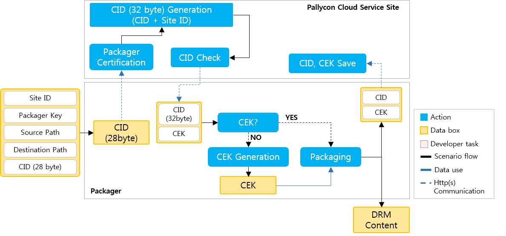
When a CID is inputted in Cloud CLI Packager, the Packager checks if the PallyCon Cloud Service Site has the CID.
The PallyCon Cloud Service Site certifies Packager and Site ID. If the certification is successful, the 28 byte Content ID is combined with the Site ID to generate a 32 byte Content ID. The same CID as the 32 byte CID is searched in the PallyCon Cloud Service Site. If the same CID exists, the CEK corresponding to the CID is searched in the Pallycon Cloud Service Site and sent to the Packager together with the CID. If the CEK does not exist, only the CID is sent.
If there is no CEK in the data received from the PallyCon Cloud Service Site, the Packager creates the CEK. Then, it starts to convert the source contents in the source path to DRM contents using the CEK and CID.
Once the conversion is completed, DRM contents are created in the destination path and the Packager sends the CID and CEK to the PallyCon Cloud Service Site.
Issuing CID through the CID Issue Page
*If no CID is inputted to the CID interface in Cloud CLI Packager, or if Cloud Application Packager is used, you must issue the CID from the CID issue page. *
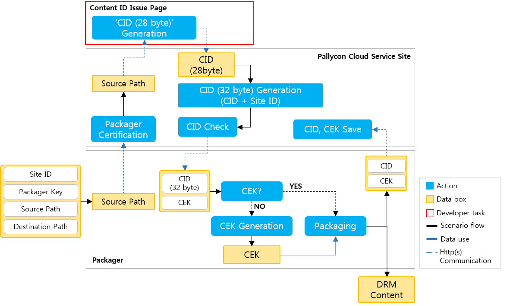
Packager requests the issuance of CID from the PallyCon Cloud Service Site and the PallyCon Cloud Service Site requests the issuance of CID from the CID issue page of the Content ID Issue Page URL. The CID Issue Page creates a CID(28-byte) and sends it to the PallyCon Cloud Service Site.
The steps after this are identical to the steps for direct input of CID.
DRM Content & Service Scenario
DRM Content
All contents can be packaged to DRM contents.
In general, the source files are directly packaged, but for HLS contents, the HLS keys are packaged.
To package HLS contents, you must convert them to general HSL files in the first step. You must use a tool that provides the 'Simple Encryption’ option of the Segment Tool. When you create a TS file using this option, an HLS key for decoding the encoded TS file is created in addition to the TS file and a M3U8 file. This HLS key is packaged with Packager.
The following figure illustrates the preparation of DRM contents for HLS service.
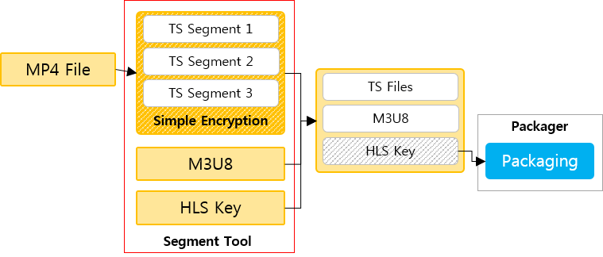
Service Scenario
License is required for servicing DRM contents. License contains the Content ID and CEK of DRM contents, as well as the content usage period and count.
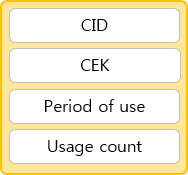
Licenses are issued from the PallyCon Cloud Service Site. To issue a license, you need user, device, and content information. Among them, the content contains the CID(32-byte, including the site ID) extracted from the DRM contents.
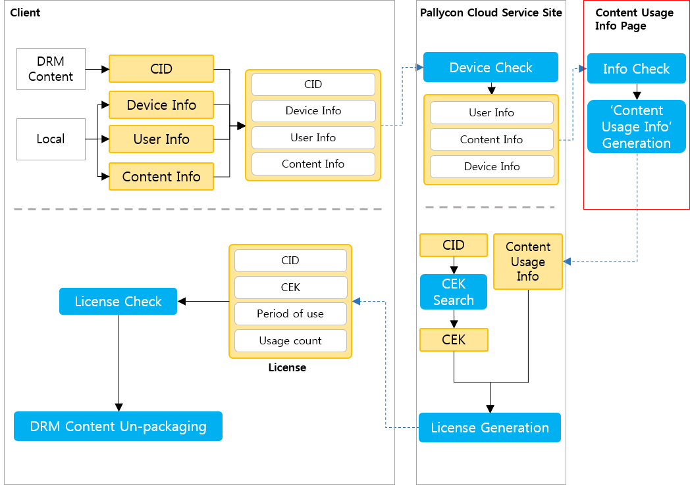
When a user attempts to use DRM contents, Player extracts the content ID from DRM contents. Furthermore, it also extracts device and user information and other content information and sends the data for requesting a license to the PallyCon Cloud Service Site together with the CID(32-byte).
The PallyCon Cloud Service Site uses the user and device information contained in this data and determines whether it is possible to issue a license. If possible, it delivers the request data for content usage information (usage period and count) to the Content Usage Rights Info Page including the CID(32-byte), content information, and user information.
The Content Usage Rights Info Page sends the content usage rights information to the PallyCon Cloud Service Site in accordance with the request data. The PallyCon Cloud Service Site extracts the CEK in line with the CID(32-byte). The CEK is used together with the content usage information to generate a license, and the license is sent to the client.
The client determines whether the DRM content can be used using the issued license. If it can be used, the client unpacks the DRM content to the original content using the CEK.
Content ID Policy
Content IDs are linked to Licenses one to one. Therefore, depending on the CID setting when packaging contents, you can manage multiple contents with one license, or manage each content with a different license.
If you service multiple contents as a group, it is more effective to manage them with one lincense rather than to manage each content with a different license. To manage multiple contents with one license, use the same CID for the contents to be grouped when packging contents.
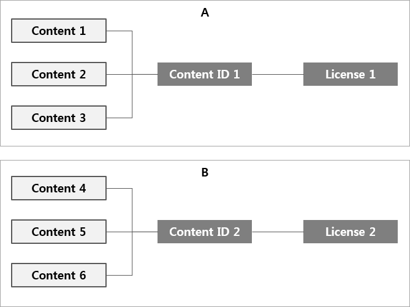
If you service each content separately, you must manage each content with a different license. In this case, use a different CID for each content when packaging contents.
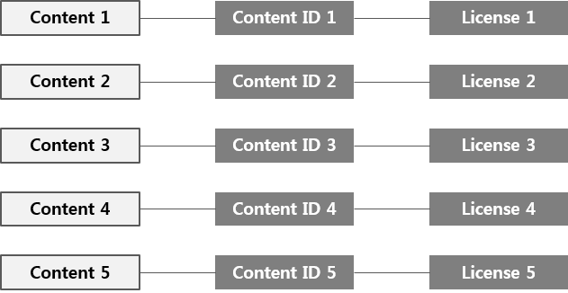
Content ID Issue Page
This document describes the protocol and standard for developing the CID Issue Page when receiving CID by communicating with the CID Issue Page rather than directly inputting the CID.
Http(s) Protocol (POST Method, REQUEST/RESPONSE Data)
Through the development of the CID Issue Page, developers must create a content ID (CID, 28-byte) in line with the data requested by Cloud CLI Packager or Cloud Application Packager.
REQUEST DATA
Details
These data must be parsed in the CID Issue Page.
http(s)://ContentIDIssuePageURL&data=Base64Encoding(AES256Encyption(XML DATA))String
Format
- Use the UTF-8 String Encoding
- POST Method
- URL: http(s)://Content ID Issue Page URL
- Body Parameter : data Value II: XML DATA
XML DATA
This data contains information about the contents to be packaged. This data is encrypted with AES256, and then encoded with Base64 again before being sent.
XML Standards
The request data is sent from the PallyCon Cloud Service to the CID Issue Page with no empty value.
<?xml version='1.0' encoding='UTF-8'?>
<RES>
<FILEPATH>C:\DATA\package_content_ori.mp4</FILEPATH>
<FILENAME>package_content_ori.mp4</FILENAME>
<NONCE>fdfe321xb74azv</NONCE>
</RES>
FILEPATH : This is the total path of the file sent from Packager.
FILENAME : This is the file name of the FilePath sent from Packager.
NONCE : This value is for validating the communication data from the PallyCon Cloud Service to the CID Issue Page.
RESPONSE DATA
Details
This data must be created in the CID Issue Page.
Base64Encoding(AES256Encyption(XML DATA)) String
Format
- Base64Encoding(AES256Encyption(XML DATA)) String
- Use the UTF-8 String Encoding
XML DATA
- Response to a request from the PallyCon Cloud Service
XML Standards
*[Successful issuance of CID]*
<?xml version='1.0' encoding='UTF-8'?>
<RES>
<ERROR>0000</ERROR>
<CID>idd_32_gee</CID>
<NONCE>fdfe321xb74azv</NONCE>
</RES>
*[CID issuance failed]*
<?xml version='1.0' encoding='UTF-8'?>
<RES>
<ERROR>0001</ERROR>
<ERRMSG>No Registered File</ERRMSG>
<NONCE>fdfe321xb74azv</NONCE>
</RES>
ERROR
: This is a defined error code, which is a required parameter. It must have a fixed length of 4 bytes and empty value is not allowed. If successful, this is set to 0000 other values indicate failure.
ERRORMSG
: This message is related to ERROR when the ERROR value means failure. This is not a required parameter and empty value is allowed. Up to 255 types are allowed.
CID
: This CID is generated by the CID policy in the CID Issue Page and must be used in the event of success. Empty value is not allowed, and up to 28 bytes can be used. For CID, only English alphabets, numbers, and some special characters (’ _ ’, ’ . ’) are allowed.
NONCE
: This is a required parameter that must be used to for validating the data for communicating between the PallyCon Cloud Service and the CID Issue Page. Empty value is not allowed, and the same value as the 'NONCE’ value in Request Data must be sent.
AES256 Encryption/Decryption
The communication data (REQUEST/RESPONSE DATA) between the Cloud Packager and the DRM server is protected by AES256 encryption.
Details
Algorithm
- Algorithm : AES
- Keysize : 256 bit
- Mode : CBC
Key, Initial vector
- Key: 32 byte (This can be checked in PallyCon CP Admin Page.)
- Initial vector: 16 byte (a fixed value: 1234567890abcdef)
Padding - PKCS7 is used.
How to Use Cloud Application Packager
Installation
The Cloud Application Packager can be used right after decompressing the .zip file without any installation process.
Bin folder
- NCG_Packager.exe: Program execution file
- Packager.key, Setting.ini, Image: Files required for running the program
Doc folder
- NCG_Packager_Manual_Eng.doc: Program manual file
Release_Note.txt
- Revisions that have been changed from the previous version
How to Use
STEP1: Run the program by double-clicking NCG_Packager_Cloud.exe in the Bin folder.
STEP2: Enter the site ID and packager key in the Settings window. (You can check them in PallyCon CP Admin.)
STEP3: Set Packager in the Settings window. When you run the program first, the default values are set.
STEP4: Set the destination path in the main window.
STEP5: Set the source path (folder) in the main window to load the list of files to be packaged.
STEP6: Click the “Packaging” button in the main window to start packaging.
Window Descriptions
Main window
(1) Input : This folder contains source video files that need to be packaged.
(2) Ouput : After packaging, the packed files are stored in this folder.
(3) Input Folder : You can specify the folder in Explorer by pressing this button.
(4) Output Folder
: This button can be used only if the Pack type in Settings is Batch.
: You can specify the folder in Explorer by pressing this button.
: When the folder is changed, the file list is initialized.
(5) Add Input Folder
: This button can be used only if the Pack type in Settings is Unit.
: You can add continuously desired folders without specifying any folder.
(6) Add Input False
: This button can be used only if the Pack type in Settings is Batch.
: You can continuously add unit files.
(7) Settings : The Settings window appears.
(8) Packaging : The files in the list are packaged.
(9) File List : This list has two columns: File Name Column and Result Column.
File Name Column
This is the list of files to be packaged. This list can be specified as input folder. You can add an input folder with Add Input Folder. If there is any file in the list that you don’t want to package, you can delete the file by clicking it and pressing the Delete key. You can also delete multiple files in the list.Result Column Ready: This appears before packaging. Success: This appears when packaging is successful. Fail: This appears when packaging fails.
(10) Log List : This list has two columns: Log Type Column and Contents Column.
Log Type Column
Error: This appears when an unexpected error occurs during packaging.
Work: The normal work situations during packaging are recorded.
Settings: Information about environment settings is recorded.Contents Column
Work: ’[Work File Name] + Work Result’ is displayed.
Error: ’[Work File Name] + Work Failed Location + Code Number’ is displayed. When an error actually occurs, these logs are automatically saved in a file, and the log file must be sent to Help Desk for analysis.
Settings: Settings at the time of packaging are shown.
Result: The Total, Success, and Fail counts agree with the Result Column in the File List window. The packaging results are summarized.
Settings window
The top of the Settings window is divided into 'Common’ section and 'Packaging’ section.
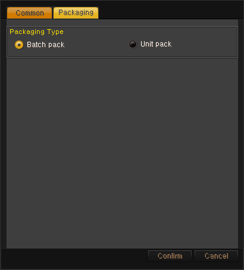
(1) Packaging Type
Batch Pack: This is a batch job and only one folder can be specified with the Input Folder button. However, the output folder is created with the same subfolder structure. If a different folder is specified, the list in File List disappears.
Unit Pack: You can continuously add a folder to be packaged through the Add Input Folder button as individual job. However the subfolder cannot be maintained in the output folder. You can also continuously add individual files with the Add Input File button.
(1) Supported Extensions : This shows the list of supported extensions. When you try to add a file using Input Folder in the main window, files of unsupported extensions cannot be added. You can add or delete extensions using the Add and Remove buttons.
(2) Integration Info - Site ID: This is the site ID issued in PallyCon CP Admin. - Packager Key: This is the Packager Key issued in PallyCon CP Admin.
Progress Bar window
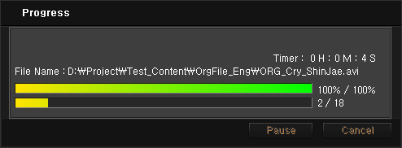
(1) File Name : This shows the name of the file that is being processed in real time.
(2) Timer : The total time that has progressed. Paused time is excluded.
(3) Percentage : This shows the packaging progress rate of one file.
(4) Total Number : The total number of files to be packaged and the number of files that have been completed are shown.
(5) Pause & Cancel : You can pause during a job, and this time is not added. You can restart the job by pressing the Continue button. Furthermore, you can press the Cancel button to cancel the job. Because a job is cancelled in file unit, the job stops after the currently working file is completed.
Log Analysis
Log File location: The log file is automatically created as 'execution folder/LogList_mmddhhmm.txt’ where 'mm = month , dd = day , hh = hours , and mm = minutes’ mean.
How to Use Cloud CLI Packager
Checking Cloud CLI Packager
- Receive the Cloud CLI Packager file through the PallyCon Service Site.
- When you decompress the file, the following folder appear (Linux_CentOS, Linux_Ubuntu, Windows)
- Two folders (bin, doc) and one file (ReleaseNote.txt) are in each folders.
- Windows: The ncgpackager.exe file in the bin folder is the command line packager.
- Linux: Elevation of privilege should be needed.
- chmod 775 “filename”
Input / Output Standards
Input
Format
ncgpackager pack Site_ID Packager_Key "SourceFilePath" "DestinationFilePath" (Content_ID)
// When cid is entered
ncgpackager pack F001 FVJDp2LT2Xr0f4Di18z6lzv3DKvNOP20 "d:\content\OT.mp4" "d:\NCGcontent\OT.mp4.ncg"
// When cid is not entered
ncgpackager pack F001 FVJDp2LT2Xr0f4Di18z6lzv3DKvNOP20 "d:\content\OT.mp4" "d:\NCGcontent\OT.mp4.ncg" 1234
pack : This fixed 4 byte value means to perform packaging of the contents. Use only small letters.
Site_ID, Packager_Key : This value is assigned in the PallyCon Cloud Service Site.
SourceFilePath, DestinationFilePath : These are the total path of the source file and the total path (the absolute path) of the DRM file creation. If there is a space, it must be enclosed by “”.
Content_ID : This is the Content ID. If you enter it directly, it must be entered at the end. Its length must be 32 bytes or less and only English alphabets, numbers, and some special characters ( ’, ’ , ’ _ ’ ) can be used.
Output
**Success**
<?xml version=\"1.0\" encoding=\"UTF-8\"?>
<ncgpackager>
<RESULT>0</RESULT>
<ERRORMSG>Success</ERRORMSG>
<SRCFILE>d:\content\20140814\OT.mp4</SRCFILE>
<DSTFILE>d:\NCGcontent\20140814\OT.mp4.ncg</DSTFILE>
<ELAPSETIME>1.95000</ELAPSETIME>
<CID>1234</CID>
</ncgpackager>
**Failed (Local Error)**
<?xml version=\"1.0\" encoding=\"UTF-8\"?>
<ncgpackager>
<RESULT>1202</RESULT>
<ERRORMSG>Source File is not found</ERRORMSG>
<SRCFILE>d:\content\2014-08-14\OT.mp4</SRCFILE>
<DSTFILE>d:\NCGcontent\2014-08-14\OT.mp4.ncg</DSTFILE>
</ncgpackager>
RESULT : Required Packaging result code value, Success – 0 / Fail – Error Code
ERRORMSG : Required Message corresponding to RESULT
SRCFILE : App Error The path set for the source file
DSTFILE : App Error The path of DestFile
ELAPSETIME : Success Elapsed time for packaging
CID : Success Content ID(32-byte) inputted in the content header
Error Code
| Error Code | Error Location | Explanation |
|---|---|---|
| 0 | SUCCESS | Success |
| 1101 | PARAM | No parameter after the execution command is delivered. |
| 1102 | PARAM | The parameter after the execution command is not pack. |
| 1103 | PARAM | The number of parameters after the execution command is not correct. |
| 1202 | FILE | The source file is not located in the specified path. |
| 1204 | FILE | The source file cannot be accessed (permission / file name problem). |
| 1205 | FILE | Failed to create the NCG file (permission / file name problem). |
| 1206 | FILE | Failed to create a folder that does not exist in the folders specified in the path (permission / file name problem). |
| 1210 | FILE | App failed to receive a buffer allocated (memory acquisition / rebooting). |
| 1301 | PACK | CID is empty. |
| 1302 | PACK | CEK is empty. |
| 2001 | NETWORK | Networks Error(check ErrorMessage) |
| 100XX | WINDOWS | Failed to create a window socket (retry / rebooting) |
| OTHER | Unknown error |
Revision History
This table describes the revisions of the PallyCon Packaging Guide.
| Date | Detail |
|---|---|
| 2014.08.24 | PallyCon Packaging Guide was created |
License Issue Guide
Introduction
License is required for servicing DRM contents. This document describes information required for issuing license.
License
License contains the content IDs and CEKs of DRM contents, the service term and usage count of contents. It is generated in the PallyCon Cloud Service Site and issued to clients.
Therefore, developers do not have to write codes for license issuance. Developers just need to write a page for retrieving the content usage information for the PallyCon Cloud Service Site to generate a license.
Use of this Document
This document describes the license issuing process and the procedure for setting the content usage information required for license issuance.
This description allows you to:
- understand the cautions when issuing a license, and
- get ideas about various setting methods for license information.
Necessary Conditions
Before starting this task, developers must have the following:
- DRM contents to service, and
- knowledge and application techniques for HTTP(s) communication and AES encryption which are required for development.
Working Procedure
STEP1: Carefully read this document at least once in order to learn about license issuance.
STEP2: Decide a policy for setting Content Usage Rights Info.
STEP3: Develop the Content Usage Rights Info Page in accordance with the content usage information standard in this document.
STEP4: Register the content usage Info Page address as the Content Usage Rights Info URL of PallyCon CP Admin.
Scenario
License Issue Scenario
When a user attempts to use DRM contents, Player extracts the content ID(32-byte) from the DRM contents. Furthermore, it also extracts device and user information and other content information and sends the data for requesting a license to the PallyCon Cloud Service Site together with the CID.
The PallyCon Cloud Service Site uses the user and device information contained in this data and determines whether it is possible to issue a license. If possible, it delivers the request data for content usage information (usage period and count) to the Content Usage Rights Info Page including the CID, content information, and user information.
The Content Usage Info Page sends the content usage information to the PallyCon Cloud Service Site in accordance with the request data. The PallyCon Cloud Service Site extracts the CEK in line with the CID. The CEK is used together with the content usage information to generate a license, and the license is sent to the player.
The player determines whether the DRM content can be used using the issued license. If it can be used, the client unpacks the DRM content to the source content using the CEK.
Interconnection of Content Usage Info
The PallyCon Cloud Service Site sends the user, content, and device information to the Content Usage Rights Info Page and requests the content usage rights information to create a license of the contents to be used.
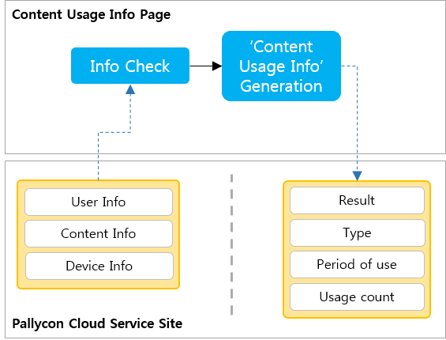
The Content Usage Rights Info Page sets the information in line with the policy for using contents determined by the vendor and sends it to the PallyCon Cloud Service Site.
Content Usage Rights Info Page
This document describes the protocol and standard for developing a page for receiving the content usage rights information by communicating with the Content Usage Rights Info page.
Protocol (POST Method, REQUEST/RESPONSE Data)
Developers must create response data in line with the data for requesting the content usage rights information from the PallyCon Cloud Service Site by developing the Content Usage Rights Info page.
REQUEST DATA
Details
http(s)://ContentUsageRightsInfoURL&data=Base64Encoding(AES256Encyption(XML DATA))String
Format
- Use the UTF-8 String Encoding
- POST Method
- URL: http(s)://Content Usage Rights Info URL
- Body
Parameter : data Value II: XML DATA
XML DATA : This data contains the content, user, and device information for which to check the content usage rights information. This data is encrypted with AES256 and then encoded again with Base64 before being delivered.
XML Standards
The request data which is sent from the PallyCon Cloud Service Site is sent to the Content Usage Rights Info page with no empty value.
<?xml version='1.0' encoding='UTF-8'?>
<RES>
<CID>C000004731001HD</CID>
<USERID>1113654772</USERID>
<DEVICEID>YqiqMLuuKbIVtPp+Vl36RdLbE+cMmtADw5M=</DEVICEID>
<DEVICEMODEL>iPhone</DEVICEMODEL>
<OID>MOVIE-J-R15-2011</OID>
<NONCE>fdfe321xb74azv</NONCE>
</RES>
CID : This content ID (32-byte, including a Site ID) is extracted from the content to be used and it has been used in packaging.
USERID : This is the ID of the user who wants to use the content.
DEVICEID : This is the ID of the device that wants to use the content.
DEVICEMODEL : This is the model name of the device.
OID : This is the order ID of the content.
NONCE : This value is used to authenticate the data that is communicated between the PallyCon Cloud Service Site and the Content Usage Info page.
RESPONSE DATA
Details
This data must be created by the CID issue page.
Base64Encoding(AES256Encyption(XML DATA))String
Format
Base64Encoding(AES256Encyption(XML DATA)) String
- Use the UTF-8 String Encoding
XML DATA : Response to a request from the PallyCon Cloud service
XML Standards
<?xml version="1.0" encoding="UTF-8" standalone="yes"?>
<RES>
<ERROR>0000</ERROR>
<ERRMSG>OK</ERRMSG>
<LIMIT>Y</LIMIT>
<PD_COUNT></PD_COUNT>
<PD_START>2013-12-17T13:27:01</PD_START>
<PD_END>2013-12-18T10:44:56</PD_END>
<NONCE>fdfe321xb74azv</NONCE>
</RES>
ERROR
: This is a defined error code, which is a required parameter. It must have the fixed length of 4 bytes, and no empty value is allowed. Set this to 0000 if successful; if failed, set this to a 4-byte error code defined by the vendor.
ERRORMSG
: This is a message related to the ERROR value in the event of failure. This is a required parameter, and empty value is only allowed when it is not an error. Up to 255 bytes can be used.
LIMIT : This parameter determines whether contents will be played with no limit. Only 'Y’ and 'N’ are allowed. Other characters are processed as errors.
PD_COUNT : This is a count that must be used in the count type. You must select a value larger than zero when selecting the count type.
PD_START : This is the start date and time in the period that must be used in the period type. You must set a corresponding value to this parameter when selecting the period type. Set the date and time in GMT.
PD_END : This is the CID generated by the CID policy on the CID issue page. This parameter must be used in the event of success. Empty value is not allowed and up to 32 bytes can be used. For CID, only English alphabets, numbers, and some special characters (’ _ ’, ’ . ’) are allowed.
NONCE : This is a value used by the PallyCon Cloud service to validate the data that communicate with the CID issue page. This is a required parameter. Empty value is not allowed, and this must be identical to the 'NONCE’ value in Request Data.
AES256 Encryption/Decryption
The communication data (REQUEST / RESPONSE DATA) between Cloud Packager and DRM is protected by the AES256 encryption.
Details
Algorithm
: - Algorithm : AES
- Keysize : 256 bit
- Mode : CBC
Key, Initial vector
: - Key: 32 byte (This can be checked in PallyCon CP Admin pageCloud-Admin) - Initial vector: 16 byte (a fixed value: 1234567890abcdef)
Padding
: - PKCS7 is used.
How to Set Content Usage Rights Info
The usage period and count included in the license are created by the content usage rights information. The content usage rights information is created by the vendor’s policy. As the information required for the vendor to determine a policy, the PallyCon Cloud Service Site sends the Content ID, User ID, Device ID, and Order ID, which have been extracted from Player, to the Content Usage Rights Info Page.
This document explains how the PallyCon Cloud Service Site determines the content usage rights information and sets the usage period and count.
License Rule Information
The License Rule is determined by the usage period and time. There are four License Rules: Count, Period, Unlimited, Count+Period.
- Count: Play is managed by count.
- Period: Play is managed by period.
- Unlimited: Play is unlimited.
- Count+Period: Play is managed by count and period. If the period expires, no more play is possible even if the count has not been used up yet. If the count becomes zero, no more play is possible even if the period has not expired.
The License Rule is determined by the value set in the Content Usage Rights Info Page.
The following table shows how to set license rules according to the contents use rights setting.
| License Rules | LIMIT | PD_START | PD_END | COUNT |
|---|---|---|---|---|
| Count System | Y | Empty | Empty | Value greater than 0 |
| Period System | Y | Date before PD_END | Date after PD_START | Empty |
| Period System+Count System | Y | Date before PD_END | Date after PD_START | Value greater than 0 |
| No Limit | N | Empty | Empty | Empty |
CONTENT ID, USER ID, DEVICE ID, ORDER ID
The content usage rights information created by the vendor must use the Content ID, User ID, Device ID, Order ID that have been extracted from PallyCon Player. The content usage rights information can be created in various ways by using these four data. To use these four data, you must know details about them.
Content ID
This is the content ID received when the source content was packaged.
User ID
This is the user ID for the Service Site that is operated by the vendor.
Device ID
This is the ID of the device with which user wants to use the contents. For the device ID, the Pallycon Cloud Service Site performs Device Check.
Device Check: This function is used by the vendor to control the number of devices per Site ID in CP Admin.
PallyCon Mobile Player offers the Device Registration feature in addition to Device Check in the Pallycon Cloud Service Site. This feature is provided together with the Device Release. You can manage the play of the contents downloaded to mobile devices with these two features.
In the case of PallyCon PC Player, Device Registration" is not necessary because contents are played through streaming, and playback can be managed by **Device Check in the Pallycon Cloud Service Site.
Order ID
Order ID is the order identification of the contents that a user wants to play. This information is identical to the value received from the Service Site of the vendor and is used for identifying the contents to be played.
In actual service, the same contents may be classified into different categories. In this case, contents in different categories may have the same Content ID. To distinguish this, you must use the Order ID.
Revision History
This table describes the revisions of the License Issue Guide.
| Date | Detail |
|---|---|
| 2014.08.24 | License Issue Guide was created |
Moblie Player Integration
Introduction
This guide has been written to help you set the interaction between PallyCon Player and Service Site (web server or web page operated by the vendor to interact with the functions provided by PallyCon Player).
About PallyCon Player
The PallyCon Player app is accessed and used by multiple vendors. All information including the contents and licenses of companies are managed separately for more effective management of accessing vendors. Therefore, standards in this guide must be observed for clear division of vendors.
Most functions of PallyCon Player are linked with the Service Site in the browser.
- Download/Streaming: When you touch the button on the Web page in the browser, the app is loaded and carries out each function.
- Device Register/Release: You can register/deregister devices to/from the Web server.
- Validity Check: Before downloaded contents are played back, the server is checked to determine whether or not it is OK to play back the contents.
- *Download Complete: * When the contents are downloaded, it is notified to the server.
PallyCon Player can only play source/packaged video contents. PallyCon Player can only play video contents: source (non-DRM) MP4 files and (DRM) MP4 files packaged with NCG.
Pallycon Player can be separately controlled from the Pallycon Service Site separately from the control of device check. Pallycon Player can control the number of devices per user account. This feature is provided for the management of contents downloaded to a mobile device. *If the device registration is successful, you can proceed with downloading and streaming. If the device release is successful, the downloaded contents and the license of the contents are all deleted. *
PallyCon Player provides various features related to play.
- Favorites: Users can bookmark frequently used contents.
- Section Loop: You can set a section for repeated play while playing a video.
- Play Speed: You can play contents at the desired speed. In the case of Android, content play speed can be set for 720p or lower resolutions. Play speed can be set between 0.5 and 2.0.
- Bookmark: You can save together with a memo the desired points during play.
- Progress: The progress of the play (local play) of the downloaded content is shown as a percentage. This is not linked with the server.
- QnA: During play, users can touch the QnA button to go to the Web page where they can ask questions about the contents, or this can be used for other purposes.
Use of this Document
This document provides detailed explanation about the specifications, flow, and scenario of the data exchanged between PallyCon Player and Web server.
This description allows you to:
- understand the sample scripts provided to developers and receive information needed for building a Web server
- control apps and get information required for services, and
- get information required for handling CS that occurs during a service.
Prerequisites
PallyCon Player plays source video files and video files that have been packaged with NCG. Therefore, you must have source video contents and packaged RM video contents.
The Content Usage Info Page for issuing licenses must have been developed.
You must understand the total flow of the service by reading the Quick Start Guide (Server Interconnection).
You need technical understanding and application for setting the data that you give (respond) to and receive (request) from PallyCon Player. PallyCon Player manages and carries out functions according to the response of the Web server. Therefore, the Web server must send correct information to PallyCon Player.
Interconnection Work Procedure
If the above 'Prerequisites’ are satisfied, carry out the PallyCon Player interconnection work in the following sequence:
| STEP1 | Carefully read this procedure at least once to understand the total flow. |
| STEP2 | Activate the develop log (communication log between PallyCon Player and Web server). (Set ‘log_type’ in Download/Streaming Specification of URL Scheme to '1’. You can check the log in the 'Environment Settings’ page of PallyCon Player.) |
| STEP3 | Start the interconnection test in two service scenarios. |
Download scenario
Download (URL Scheme) -> Vendor Authentication (RI Cloud)] -> Device Register (Service Manager URL) -> Download Complete (Service Manager URL) -> Validity Check (Service Manager URL) -> Device Release (Service Manager URL)
Streaming scenario
Download (URL Scheme) -> Vendor Authentication (RI Cloud) -> Device Register (Service Manager URL) -> Device Release (Service Manager URL)
APIs
Communication between PallyCon Player and Web server is carried out through URL Scheme (Protocol I) and HTTP/HTTPs(Protocol II).
Protocol I: URL Scheme
URL Scheme is used to call PallyCon Player from the Web browser. This approach is used by Download and Streaming (Progressive Download Play) services.
DETAILS
- Single-Download URL Scheme: pallyconplayerdownload://info= JSON DATA &site_id= SITE ID
- Multi-Download URL Scheme: pallyconplayerdownloads://info= JSON DATA &site_id= SITE ID
- Streaming URL Scheme: pallyconplayerplay://info= JSON DATA &site_id= SITE ID
Format
- UTF-8 String Encoding is used.
JSON DATA
- Base64Encoding(AES256Encyption(JSON DATA)) String
- The downloaded contents, user information, and PallyCon Player settings
SITE ID
- Service site ID (this can be checked in the PallyCon CP Admin Page)
Protocol II: HTTP/HTTPs protocol (POST method)
Communication between PallyCon Player and Web server is carried out through HTTP/HTTPs. Data are sent by using the POST method. The following functions use communication between PallyCon Player and Web server:
- Device Register
- Download Complete
- Validity Check
- Device Release
DETAILS
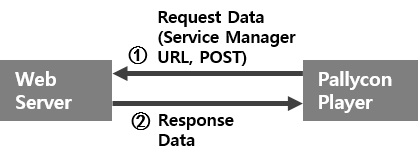
HTTP/HTTPs communication consists of the data requested by PallyCon Player to the Web server (REQUEST DATA) and the data responded by the Web server to PallyCon Player (RESPONSE DATA).
REQUEST DATA
Format
- UTF-8 String Encoding is used.
- POST Method
- URL: http(s)://Service manager URL
- Body
Parameter: data
Value: Base64Encoding(AES256Encyption(JSON DATA))String
http(s)://Service_Manager_URL&data=Base64Encoding(AES256Encryption(JSON DATA))String
JSON DATA : Because one URL must process four different data, a parameter for distinguishing four modes is provided in the JSON data.
- Device Register: {“mode”:“Device Register”, …}
- Download Complete: {“mode”:“Download Complete”, …}
- Validity Check: {“mode”:“Validity Check”, …}
- Device Release: {“mode”:“Device Release”, …}
RESPONSE DATA
Format
- Base64Encoding(AES256Encyption(JSON DATA)) String
- UTF-8 String Encoding is used.
JSON DATA
- Response to the request of PallyCon Player
Security
The communication data (REQUEST/RESPONSE DATA) between PallyCon Player and Web server is protected through AES256 encryption.
DETAILS
Algorithm
: - Algorithm : AES
- Keysize : 256 bit
- Mode : CBC
Key, Initial vector
: - Key: 32 byte (The key for each service site can be checked in the PallyCon CP Admin Page) - Initial vector: 16 byte (a fixed value: 1234567890abcdef)
Padding
: - PKCS7 is used.
APIs Working Scenario
Service Scenario
PallyCon Player largely provides two services by interacting with the server.
Download/Local play
This service consists of touching the button to download contents, playing the downloaded contents, and releasing the device. In this service, various functions are used and data is saved or loaded to use the functions. The functions used in this service and the data setting actions are listed below.
- Check the status of the app (PallyCon Player)
- Vendor Authentication
- Decryption
- Device Register
- Download Complete
- Validity Check
- Device Release
Streaming
This service consists of touching the Play button for contents in a Web page and play of the contents. The functions used in this service and the data setting actions are listed below.
- Check the status of the app (PallyCon Player)
- Vendor Authentication
- Decryption
- Device Register
- Device Release
Scenario
Download and Streaming services have the same structure of calling PallyCon Player from a Web page. Therefore, as shown in the figure, they have the same process consisting of ‘Check the status of the app (PallyCon Player)’, ‘Vendor Authentication’, ‘Device Register’, etc.
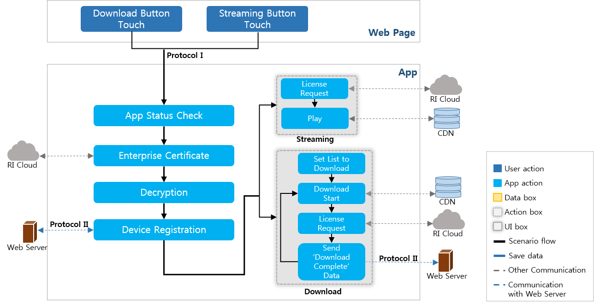
Furthermore, they both include the ‘Device Release’ function as the both have the 'Device Register’. The device release scenario is described below.
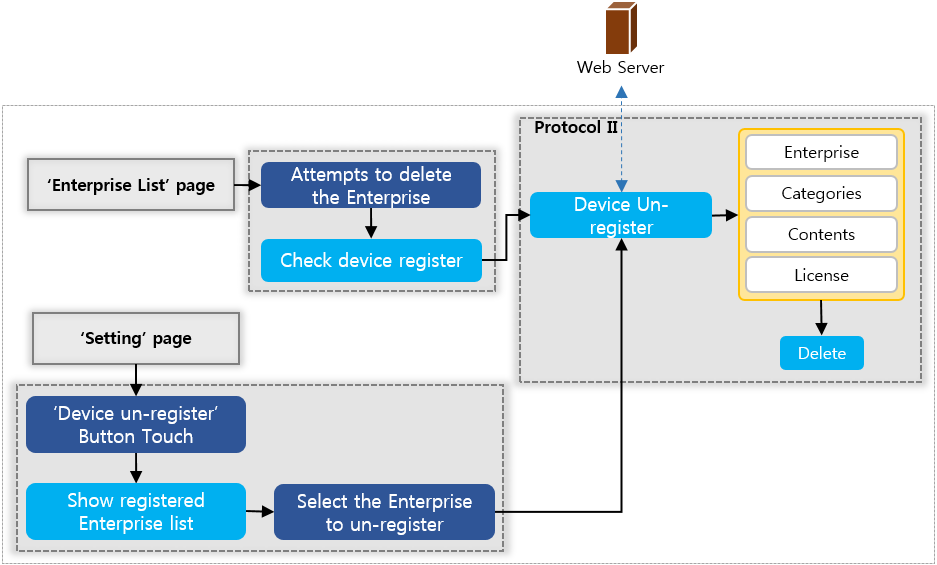
You can see the downloaded contents in the Contents List of PallyCon Player. You can also see them in ‘Favorites List’, ‘Bookmark List’, and ‘Recently Played Contents List’ when you play the contents or add them to bookmark and favorites. The scenario for selecting contents to play in each list is described below.
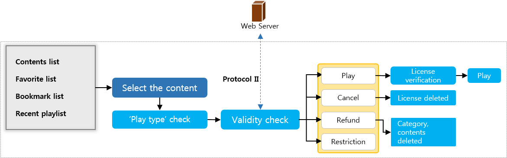
Checking the Status of App (PallyCon Player)
When you run PallyCon Player through URL Scheme, check the status of PallyCon Player for running each function. Access to URL Scheme is blocked if the status of PallyCon Player is **‘Download’, ‘Playing’, or ‘Device Release Request’.
Vendor Authentication
You can start vendor authentication by extracting ‘site_id’ from the data accessing URL Scheme. ‘site_id’ is one of the information issued when contracting with INKA and does not require encryption.
Vendor authentication does not need to be developed by developers because it is done by communication with the RI Cloud server of INKA. What developers need to know is that when vendor authentication is successful, the key and IV for decrypting the encrypted vendor name corresponding to 'site_id’ and 'info’ value of URL Scheme are sent as the response data.
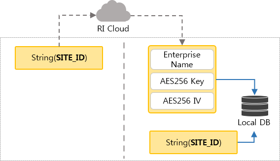
AES 256 encryption/decryption Key, IV(Initial vector):
- You receive the key for AES256 encryption/decryption of the data for interconnecting with the Web server when contracting with INKA. Because this value is matched to 'site_id’, you must use the site_id, AES256 Key that you received at the time of contract. (The Initial Vector used together with the AES256 Key is a fixed value of 16 bytes, which is ’1234567890abcdef’.)
- The vendor name, key and IV received through vendor authentication are saved in the DB.
- Because the communication with the RI Cloud server of INKA uses PKI, the data used in the communication and DB are strongly protected.
Decryption
Encryption and decryption are applied to all data communicated between the Web server and PallyCon Player. This section describes the decryption scenario after vendor authentication in each service scenario.
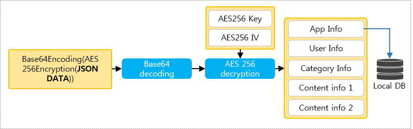
The value corresponding to ‘info’ of URL Scheme is decrypted through AES256 Key/IV that has been received from the RI Cloud server. When decryption is successful, the JSON string that has all information required for download and streamingis obtained. The vendor information is extracted from the JSON string and saved in the DB.
Device Register
To register a device, extract user information from the decrypted JSON string, device information from the user device, and app information from PallyCon Player. Convert the extracted information into a JSON string and request device registration to the Web server.
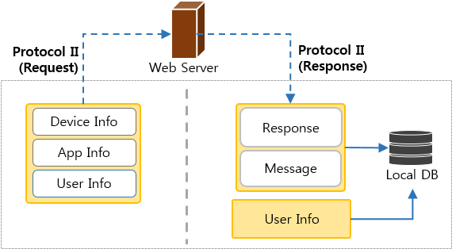
When response data to the device registration request is received from the Web server, the data is decrypted and success or failure is checked. Then the message is extracted from the response data from the Web server and displayed as alert in PallyCon Player. When device registration is successful, the user information is saved in the DB.
Streaming
iOS supports streaming only in WiFi.
Apple Regulations (9.4) prescribe the use of HLS (HTTP Live Stream) for streaming in cellular mode. However, PallyCon Player uses Progressive Download Play for streaming. Therefore, streaming in iOS is only possible in Wifi mode.
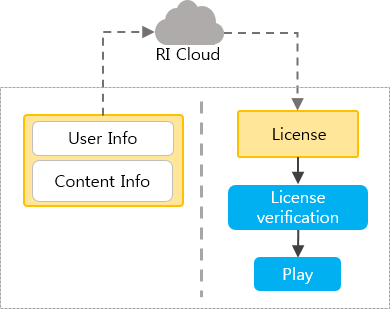
To start streaming, you must receive a license from the RI Cloud server of INKA using the 'user information’ and 'content information’ from PallyCon Player and check if the license is valid.
Download
There are two types of download: Single-Download and Multi-Download. In general, Single-Download is performed by a user touching the download button of the desired contents list in the Web page, and Multi-Download is performed by a user selecting the desired contents in the Web page and touching the Multi-Download button.
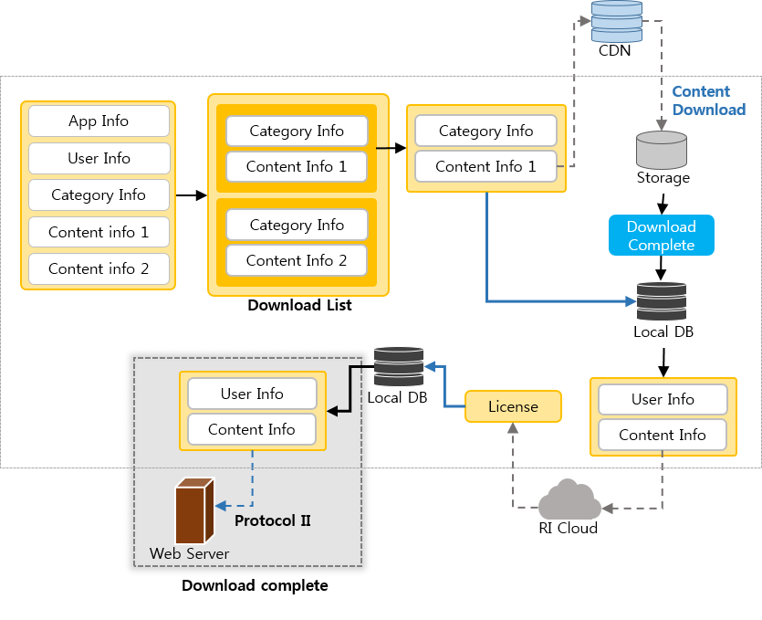
To download the selected contents, PallyCon Player creates a download list. The download list has one item for Single-Download and n items for Multi-Download.
Download begins from line 0 of the download list. When the download is completed, the information of the download list is saved in the DB.
The license of the downloaded file is issued from the Cloud server of INKA using the user information and contents information. Even if no license is issued, it is not determined as download failure. The reason is that when you attempt local play and the license is checked, if there is no license and it is online, an attempt is made to issue a license.
A user sends to the Web server the information that contents download has been completed. You can save this information in the Web server and use it later for refund or statistics.
If there are contents to download in the download list, the download of the next items in the list is attempted. If there is none, PallyCon Player moves to the top list in the storage box.
Validity Check
The first thing to do before playing contents is to check the play_type in the vendor information of Local DB. Whether or not to perform validity check is determined by the play_type.
If validity check is required, The 'user information’, 'device information’, and 'content information’ are extracted and validity check for the contents is requested to the Web server. As a response, the Web server returns validity and message.
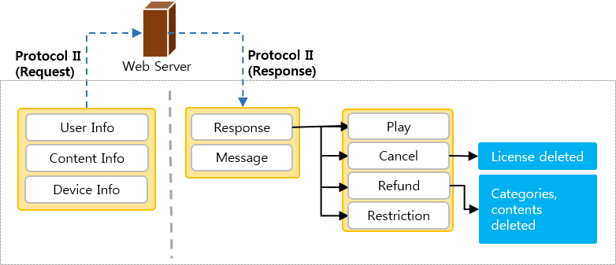
There are four types of content validity status.
- Play Possible: In this state, it is possible to play contents. This response means to play in line with the license information.
- Cancelled: This is a response to the vendor that a user is not using the contents temporarily. In this case, the license is deleted.
- Refund: A user received a refund for this content from the vendor. In this, contents are serviced as a package. Thus, the categories of contents and all contents corresponding to them (including licenses) are deleted.
- Play Limited: Licenses and contents are not deleted, but play is limited due to special circumstances.
Device Release
Device release is requested by sending the device information and user information to the Web server. As a response, the Web server returns success or failure of device release and a message. If device release is successful, PallyCon Player deletes vendors, categories, contents, and licenses.
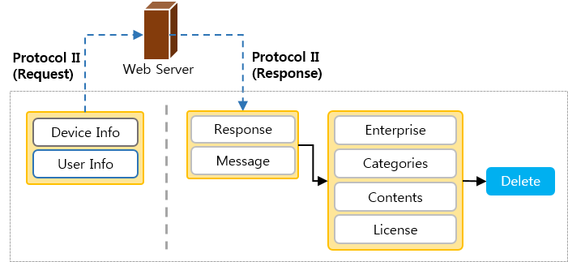
JSON Standards
This section provides detailed descriptions about the specifications of JSON Data that was explained in APIs. Because the type of all the values used in JSON is String, you must enclose the value with quotation marks (“”).
- To improve the readability of JSON Strings, each parameter has been separated by a line break. However, note that actual data do not allow line breaks or spaces between parameters.
- All parameters in the Request Data sent from PallyCon Player are required.
Download / Streaming Standard
This data must be set to the Download / Streaming buttons in the Web page.
Single-Download_JSON_String_Streaming_JSON_String
{
"user_id":"ID",
"current_url":"http://demo.netsync.co.kr/download_new2.asp",
"enterprise_icon_url":"http://demo.netsync.co.kr/KR2/image/a_logo.png",
"play_type":"0",
"service_manager":"http://demo.netsync.co.kr/LIC/service_manager.asp",
"log_type":"0",
"category_name":"Category",
"category_person":"Person",
"category_image":"http://demo.netsync.co.krKR2/image/korean_icon.png",
"category_assortment":"Assortment",
"contents":[
{
"content_file":"http://112.136.244.30/1_low_language_basic.mp4.ncg",
"content_name":"Content",
"content_qna":"QnA",
"info_orderID":"OrderID",
"info_one":"One",
"info_two":"Two",
"info_three":"Three",
"info_four":"Four",
"last_play_time":"10",
"lms_sections":"0:10",
"lms_percent":"10"
}
]
}
Multi-Download_JSON_String_(two_Contents)
{
"user_id":"ID",
"current_url":"http://demo.netsync.co.kr/download_new2.asp",
"enterprise_icon_url":"http://demo.netsync.co.kr/KR2/image/a_logo.png",
"play_type":"0",
"service_manager":"http://demo.netsync.co.kr/LIC/service_manager.asp",
"log_type":"0",
"category_name":"Category",
"category_person":"Person",
"category_image":"http://demo.netsync.co.krKR2/image/korean_icon.png",
"category_assortment":"Assortment",
"contents": [
{
"content_file":"http://112.136.244.30/1_low_language_basic.mp4.ncg",
"content_name":"Content",
"content_qna":"QnA",
"info_orderID":"OrderID",
"info_one":"One",
"info_two":"Two",
"info_three":"Three",
"info_four":"Four",
"last_play_time":"10",
"lms_sections":"0:10",
"lms_percent":"10"
},
{
"content_file":"http://112.136.244.30/1_low_language_basic.mp4.ncg",
"content_name":"Content",
"content_qna":"QnA",
"info_orderID":"OrderID",
"info_one":"One",
"info_two":"Two",
"info_three":"Three",
"info_four":"Four",
"last_play_time":"10",
"lms_sections":"0:10",
"lms_percent":"10"
}
]
}
user_id
: This is a service site user ID which is a required parameter. In PallyCon Player, null in user ID is received when a Web page expires.
current_url : This URL is used to go to the Web page when download is cancelled or streaming is completed. This parameter is not required. However, this must be set to empty value (“”) if there is no value even though it is used.
enterprise_icon_url : This is the file address of the icon to be shown in the vendor list of PallyCon Player. This parameter is not required. When this is used, a space/default image is displayed in the list when this parameter has no value.
play_type : This value is the condition for playing the contents downloaded from PallyCon Player. This parameter is not required. However, if this is used, a value must be set. If this is not used, the default is '2’.
- 0: In online state, the validity check for the content is performed and play is determined by the response value. In offline state, the content is played unconditionally.
- 1: The validity check for the content is performed only in online state, and play is determined by the response value.
- 2: Contents are played unconditionally in online or offline state.
service_manager : This is the Service Manager URL used by PallyCon Player to communicate with the Web server. This parameter is required and empty value is not allowed.
log_type
: This parameter is used for log type setting in PallyCon Player. This is not required. However, if this is used, a value must be set. If this is not used, the default is '2’.
Logs can be used to get communication, play, and license information during interconnection test or customer support.
- 0: 300 bytes of logs are kept in the Local DB, which are sent to the Web server when communication or license, etc. must be modified by a vendor. (NOT SUPPORT)
- 1: This value is set for interconnection test with PallyCon Player before service. Logs are saved in the Local DB with no limitation to the length. There is Log button in the 'Environment Settings’ page which allows you to instantly check logs.
- 2: Logs are not used.
category_name : This category name appears in the category list of PallyCon Player. This parameter is required. All characters are allowed, but empty value is not allowed.
category_person : This value is for entering other information that is shown together with the category name in the category list. This is a required parameter. All characters are allowed, but empty value is not allowed.
category_image : This is the file address of the icon to be shown in the category list. This parameter is not required. When this parameter has no value, a space/default image is displayed in the list.
category_assortment : This parameter is for category assortment, which will be used later in list sorting method. This parameter is not required and empty value is allowed.
contents : This parameter contains information about the downloaded or played contents. When multi-download is performed, the contents must be entered as an array.
Single-download (Streaming): “contents”:[{“content_file”:“”,…}]
Multi-download: “contents”:[{“content_file”:“”,…},{“content_file”:“”,…},…]
content_file : This is the server URL where the downloaded/played file exists. This parameter is required. Empty value is not allowed.
content_name : This is the name of content to be displayed in the contents list of PallyCon Player. This parameter is required. All characters are allowed, but empty value is not allowed.
content_qna : This is a URL used to go to the Web page of the browser to leave a question while playing a content. This parameter is not required. Empty value is allowed.
info_orderID : This is the order information of contents. This information is used to verify purchasing when a license is issued. This is a required parameter and empty value is not allowed.
info_one, info_two, info_three, info_four : This is additional information for distinguishing contents when download complete or validity check information is sent. This parameter is not required and empty value is allowed.
Device Registration Standard
Request data
{
"mode":"Device Register",
"site_id":"Site ID",
"user_id":"test2",
"device_id":"DID01_WZnTQFOHmZiv1vsevtorDtFHRNc=",
"device_model":"iPod5,1",
" app_version":"1.0"
}
mode : In every function, only one Service Manager URL is used for communication with the Web server. This value allows branching by function in Service manager URL. The mode for device registration is 'Device Register’.
site_id : This fixed value is issued to vendors and can be checked in Cloud Admin page.
user_id : This is the user ID stored in the device DB.
deviceid_
- iOS: The device ID is created with UUID. If you install PallyCon Player again after performing factory reset without device release in PallyCon Player and Web server, device registration fails because a new device ID is created. In this case, you must contact the vendor and ask for device release.
- Android: The device ID is created by combining various pieces of information in the device.
device_model
- iOS: The device platform is extracted. ex) iPhone6,1(iPhone5S)
- Android: The device model name in the device environment settings is extracted.
app_version : This is the version of PallyCon Player that is registered and displayed in the market.
Response data
{
"response":"Y",
"message":"SUCCESS",
"message_two":""
}
response : This is success or failure of device registration. This is a required parameter that must be entered. Empty value is not allowed. This value must be set as 'Y | N’.
message : This is a message corresponding to the success or failure of device registration, which is displayed as alert in PallyCon Player. This parameter is required and allows empty value. If this is empty value, 'Succeeded in registering the device.’ or ‘Failed to register the device.’ is set as the default message.
message_two : This is an interface that can be used for other uses than success or failure, and message. In case the same 'device_id’ is extracted in Android, if 'NOT_SUPPORT_DEVICE_MODEL’ is set to this parameter, device_id is extracted and registration is attempted again.
Download Complete Standard
No separate response data standard exists for download complete, because the response data of the Web server is not received.
Request data
{
"mode":"Download Complete",
"site_id":"Site ID",
"user_id":"test2",
"device_id":"DID01_WZnTQFOHmZiv1vsevtorDtFHRNc=",
"date":"201405191120",
" download_status":"Y",
" info_orderID":"0",
" info_one":"",
"info_two":"",
"info_three":"A",
"info_four":"1"
}
mode : In every function, only one Service Manager URL is used for communication with the Web server. This value allows branching by function in Service Manager URL. The mode for download complete is 'Download Complete’.
site_id : This fixed value is issued to vendors and can be checked in Cloud Admin page.
user_id : This is the user ID stored in the device.
device_id : This is a device ID extracted from the device.
- iOS: The device ID is created with UUID. If you install PallyCon Player again after performing factory reset without device release in PallyCon Player and Web server, device registration fails because a new device ID is created. In this case, you must contact the vendor and ask for device release.
- Android: The device ID is created by combining various pieces of information in the device.
date : Current date extracted from the device Date standard : yyyyMMddHHmm ex) 201412012359 -> December 1, 2014, 23::59
download_status : This parameter informs whether or not download has been completed. This value is displayed as Y|N.
info_orderID, info_one, info_two, info_three, info_four : These parameters and values had been received through Protocol I (URL Scheme) and saved, and then were called. These are used as additional information for distinguishing contents by the Web server.
Validity Check Standard
Request data
{
"mode":"Validity Check",
"site_id":"Site ID",
"user_id":"test2",
"device_id":"DID01_WZnTQFOHmZiv1vsevtorDtFHRNc=",
"category_name":"[A Company_Free Event]2014 Korean Language Special Course",
"content_name":"Lecture 1_Jeo_Basics of Korean Language",
"info_orderID":"0",
"info_one":"",
"info_two":"",
"info_three":"A",
"info_four":"1"
}
mode : In every function, only one Service Manager URL is used for communication with the Web server. This value allows branching by function in Service Manager URL. The mode for validity check is 'Validity Check’.
site_id : This fixed value is issued to vendors and can be checked in Cloud Admin page.
user_id : This is the user ID stored in the device.
device_id : This is a device ID extracted from the device.
- iOS: The device ID is created with UUID. If you install PallyCon Player again after performing factory reset without device release in PallyCon Player and Web server, device registration fails because a new device ID is created. In this case, you must contact the vendor and ask for device release.
- Android: The device ID is created by combining various pieces of information in the device.
category_name : This is the category name stored in the device DB.
content_name : This is the content name stored in the device DB.
info_orderID, info_one, info_two, info_three, info_four : These parameters and values had been received through Protocol I (URL Scheme) and saved, and then were called. These are used as additional information for distinguishing contents by the Web server.
Response data
{
"response":"0",
"message":"SUCCESS"
}
response : This parameter is used for sending the validity check result for the content to be played from the server to PallyCon Player. Empty value is not allowed. This value must be set as one of '0 | 1 | 2 | 3’.
- 0: Play Allowed
- 1: Cancelled (the license of the content is deleted.)
- 2: Refund (even the category containing the content is deleted.)
- 3: Play Limited
message : This parameter is used to enter a server message to be displayed as alert in PallyCon Player. This parameter is required. Empty value is allowed when play is allowed (response: 0). Empty value is not allowed for other cases.
Device Un-registration Standard
Request data
{
"mode":"Device Release",
"site_id":"Site ID",
"user_id":"test3",
"device_id":"DID01_WZnTQFOHmZiv1vsevtorDtFHRNc="
}
mode : In every function, only one Service Manager URL is used for communication with the Web server. This value allows branching by function in Service manager URL. The mode for device release is 'Device Release’.
site_id : This fixed value is issued to vendors and can be checked in Cloud Admin page.
user_id : This is the user ID stored in the device.
device_id : This is a device ID extracted from the device.
- iOS: The device ID is created with UUID. If you install PallyCon Player again after performing factory reset without device release in PallyCon Player and Web server, device registration fails because a new device ID is created. In this case, you must contact the vendor and ask for device release.
- Android: The device ID is created by combining various pieces of information in the device.
Response data
{
"response":"Y",
"message":"Success"
}
response : This is success or failure of device release. This is a required parameter that must be entered. Empty value is not allowed. This value must be set as 'Y | N’.
message : This is a message corresponding to the success or failure of device release, which is displayed as alert in PallyCon Player. This parameter is required and allows empty value. If this is empty value, 'Succeeded in releasing the device.’ or ‘Failed to release the device.’ is set as the default message.
Log
This document describes how to use the 'Log View’ function which is provided for interconnection test.
Information shown in logs
- Request/response data exchanged between PallyCon Player and Web Server
- Download status/information
- License check/issue information
- Content play information
Log View Settings
Logs can be set in ‘Download/Streaming’ JSON DATA (log_type) of URL Scheme, and can be checked in the 'Environment Settings’ page of PallyCon Player. When you touch the 'Log View’ button in Environment Settings, the vendors whose ‘log_type’ is ‘1’ are listed. Touching a vendor in the list whose logs you want to see shows the logs of the vendor.
Content of Logs
The content of logs is shown in the format illustrated in the following figure. You can reset the logs by touching the ‘Refresh’ button at top right.
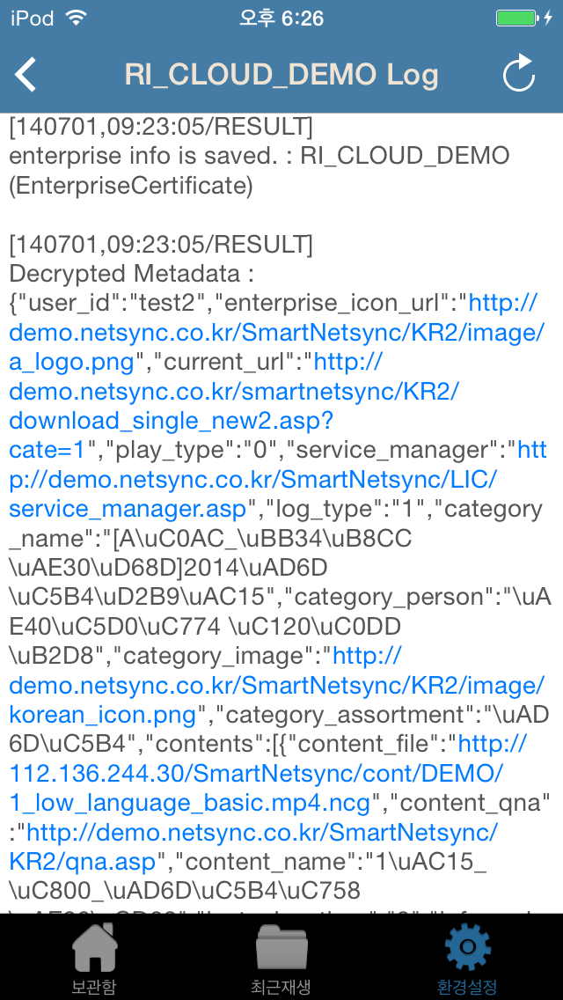
Revision History
This table describes the revisions of the PallyCon Player Interconnection Guide.
| Date | Detail |
|---|---|
| 2014.08.19 | PallyCon Player Mobile Interconnection Guide was created |
PC Player Integration
Introduction
This document is a guide to the interconnection between the PallyCon PC Web Player and the Web server of the Service Site.
About PallyCon PC Web Player
PallyCon PC Web Player is designed for Web pages of the Service Site. Therefore, it only provides streaming feature for playing contents on a Web page when users click the contents to play. PallyCon PC Web Player does not check the number of devices because it only provides streaming play. Instead, it can control the number of devices by controlling simultaneous connections.
PallyCon PC Web Player can play non-DRM/DRM video contents. For DRM contents, only Progressive Download Play is supported; for non-DRM contents, both Progressive Download Play and Http Live Streaming are supported. For supported video formats, MP4 is recommended in the case of DRM contents for integrated services with mobile. However, in the case of non-DRM contents, WMV, MPEG2-TS, Matroska, AVI, and FLV are supported as well as MP4.
| Content | Video Format | Streaming Type |
|---|---|---|
| DRM Contents | MP4 | Progressive Download Play |
| non-DRM Contents | MP4, WMV, MPEG2-TS, Matroska, AVI, FLV | Progressive Download Play, Http Live Streaming |
PallyCon PC Web Player provides various features related to playing.
| Features | Description |
|---|---|
| Bookmark | You can mark a point and easily move to it while playing a content. Furthermore, memo feature is provided and interconnection with the Service Site is possible. |
| Progress information | You can manage the progress of content playing by playback section and percent. It is also possible to interconnect with the Service Site. |
| Resume | You can play contents again from the point that you stopped playing last time. It is also possible to interconnect with the Service Site. |
| Speed | You can change the content playing speed between 0.8x and 2.0x. |
| Playlist display | The developer can display a list of contents at the right side of the player. |
Use of this Document
This document gives the following information: 1. How to apply PallyCon PC Web Player 2. Detailed explanation about the specifications of data exchanged between PallyCon PC Web Player and the Web server of the Service Site and about the scenarios of PallyCon PC Web Player.
Prerequisites
You must prepare original contents and NCG-packaged contents to play them in PallyCon PC Web Player.
License is required to play DRM contents. A page for showing the content use rights required for creating a license must be created and registered in CP Admin.
Technical understanding and application for setting the data exchanged between PallyCon PC Web Player and the Web server of the Service Site are required.
Working Procedure
If the above prerequisites are satisfied, you can perform the PallyCon PC Web Player interconnection work in the following procedure.
| STEP1 | Carefully read this procedure at least once to understand the total flow. |
| STEP2 | Build the Service Site and the Web Server of the Service Site in accordance with the specifications in the document. |
| STEP3 | Start the interconnection test according to the service scenarios. |
APIs
HTTP Protocol I: Calling the PallyCon PC Web Player Page (POST method)
When user selects a content to play on a Web page of the Service Site, the PallyCon PC Web Player is called and plays the selected content.
The information of the content is created in JSON at the URL of the PallyCon PC Web Player Page, encoded with Base64 and transferred by POST.
Format
- Use UTF-8 String Encoding
- POST Method
- URL: http://pcplayer.pallycon.com
- Body
Parameter I: data Value: Base64Encoding(JSON DATA)String
Parameter II: lang Value: Korean (KR), English (EN)
http://pcplayer.pallycon.com?data=Base64Encoding(JSON DATA)String&lang=KR
Security
: Among the JSON data, DRM User ID, File URL, and Order ID must be encrypted with AES256 before they are transferred.
Algorithm
- Algorithm : AES
- Keysize : 256 bit
- Mode : CBC
Key, Initial vector
- Key: 32 bytes (Can be checked for each service site on the Cloud Admin page)
- Initial vector: 16 byte (Fixed value: 123456890abcdef)
Padding
- PKCS7 is used.
HTTP/HTTPs Protocol II: Service Manager URL (POST method)
The communication between PallyCon PC Web Player and the Service Site is carried out through HTTP/HTTPs. The detailed data are created in the JSON format and delivered by POST.
The data exchanging functions through the communication between PallyCon PC Web Player and the Service Site are as follows:
- Bookmark
- Transfer of progress and resume information
DETAILS
The HTTP/HTTPs protocol consists of the data requested by Pallycon PC Web Player to the Web server of the Service Site (REQUEST DATA) and the data responded by the Web server to PallyCon PC Web Player (RESPONSE DATA).
REQUEST DATA
NOTE: The data exchange through the communication in PallyCon PC Web Player uses one URL (Service Manager URL). The Service Manager URL must be included in the JSON data that is handed over when the PallyCon PC Web Player page is called.
Format
- Use UTF-8 String Encoding
- POST Method
- URL: http(s)://Service manager URL
- Body
Parameter: data
Value: Base64Encoding(JSON DATA)String
http(s)://Service_Manager_URL?data=Base64Encoding(JSON DATA)String
JSON DATA
: Because one URL must process four different data, a parameter for distinguishing two modes is provided in JSON data.
- Bookmark: {“mode”:“bookmark”,…}
- Transfer of progress and resume information: {“mode”:“pc_lms”,…}
RESPONSE DATA
Format
- Base64Encoding(JSON DATA)String
- Use UTF-8 String Encoding
JSON DATA
: Response to the request of PallyCon PC Web Player
JSON Standards
This section provides detailed descriptions about the specifications of JSON Data that was explained in APIs. Because the type of all the values used in JSON is String, you must enclose the value with quotation marks (“”).
PallyCon PC Web Player Call Standard
The JSON Standard that must be set in the Body when PallyCon PC Web Player is called by POST in the Service Site is described below.
_[Settings to show the contents to be played by PallyCon PC Web Player and two contents in the PallyCon PC Web Player list]
{
"site_id":"Demo",
"user_id":"testuser",
"drm_user_id":"base64(aes(Demotestuser))",
"service_manager":"http://www.pallycon.com/service_manager.jsp",
"play_idx":"2",
"continue_play_yn":"y",
"view_yn":"y",
"multiuser_chk_yn": "y",
"contents":[{
"content_file":"http://www.pallycon.com/content/test_content1-1.mp4.ncg",
"content_name":"Pallycon Lecture 1-1",
"content_type":"mp4",
"content_end_date":"2014-08-29",
"last_play_time":"2477",
"lms_percent":"82",
"lms_section":"0-20, 70-93",
"bookmark_time":"3601;5302;4621;",
"bookmark_memo":"Bookmark1;Bookmark2;Bookmark3;",
"course_status":"1",
"order_id": "152",
"list_idx":"1",
"c_idx":"pallycon1-1"
},{
"content_file":"http://www.pallycon.com/content/test_content1-2.mp4.ncg",
"content_name":"Pallycon Lecture 1-2",
"content_type":"mp4",
"content_end_date":"2014-08-29",
"last_play_time":"0",
"lms_percent":"0",
"lms_section":"",
"bookmark_time":"",
"bookmark_memo":"",
"course_status":"0",
"order_id": "153",
"list_idx":"2",
"c_idx":"pallycon1-2"
}]
}
site_id : This is a 4-byte fixed value that is issued to vendors and can be checked on the CP Admin page. Empty value is not allowed.
user_id : This is the user ID of the user logged in the Service Site. Empty value is not allowed.
drm_user_id : This user ID is transferred to the player during playback. For this value, “site_id + user_id” is encrypted with AES and encoded with base64. Empty value is not allowed.
- ex)site_id=DEMO, user_id=testuser
- –> base64encode(aes256(DEMOtestuser)) –>320fjs890sdkljw83jf983==
service_manager : This URL is required for interconnecting Bookmark and LMS information. Empty value is not allowed.
player_idx : This is the list index that a user wants to play in a list. Empty value is not allowed.
continue_play_yn : This value determines whether or not to permit resume. You must use lower case letters only (permitted: y, not permitted: n). Empty value is not allowed.
view_yn : This value determines whether or not to show the right-side menu in PallyCon PC Web Player. You must use lower case letters only (permitted: y, not permitted: n). Empty value is not allowed.
Even if the side menu is not shown, you can add a bookmark by right-clicking your mouse.
multiuser_chk_yn : This value determines whether or not to permit multiuser check. You must use lower case letters only (permitted: y, not permitted: n). Empty value is not allowed.
contents : This parameter has the contents in the list displayed in the right-side menu as an array. If you set the ‘view_yn’ parameter as not permitted, this value is not displayed even if there is a value. Empty value is not allowed.
content_file : This is the server URL at which the files used for streaming exist. Empty value is not allowed. The file URL is encrypted with AES and encoded with base64.
- ex)url=“http://www.test.com/testcontent1.mp4.ncg”
- –> base64encode(aes(url)) –>320fjs89fd032ijfd902383jf983==
content_name : This is the name of the content displayed in the right-side menu and the player. Empty value is not allowed.
content_end_date : This is the content display end date to be displayed in the right-side menu and player.
last_play_time : This the time when the content was played last and the player resumes to play the content from this point.
lms_percent : The parameter shows the progress of playing the content as a percent. The unit is omitted. Empty value is not allowed.
lms_section : This parameter shows the section that the user played.
LMS Sections Standard
- “Start:End,Start:End, …”
- example) “0:20,40:100” ⇒ Plays from 0 to 20 and from 40 to 100.
bookmark_time : bookmark time
bookmark_memo : bookmark memo
order_id : The order ID is encrypted with AES and encoded with base64.
- ex)order_id=“352” –> base64encode(aes(order_id)) –>320fjs383jf983==
course_status : This is the progress of course registration status: 0=Not registered, 1=In course, 2=Completed
list_idx : list_idx
c_idx : c idx
Bookmark Standard
This is the standard for adding, updating, and deleting bookmarks. Whenever bookmarks are changed, PallyCon PC Web Player sets all the bookmark information and transfers it to the server. Therefore, there is only one standard for adding, updating, and deleting.
REQUEST DATA
This data is sent from PallyCon PC Web Player to the Web server of the Service Site.
{
"mode":"bookmark",
"user_id":"testuser",
"c_idx":"pallycon1-1",
"bookmark_time":"10;300;200;",
"bookmark_memo":"test1;bookmark1;bookmark2;"
}
mode : mode
user_id : user id
c_idx : c idx
bookmark_time : bookmark time
bookmark_memo : bookmark memo
RESPONSE DATA
{
"result":"y"
}
result : result
LMS Standard
When PallyCon PC Web Player stops playing, the section played by a user is transferred to the Web server of the Service Site.
REQUEST DATA
This is the JSON data that is sent from PallyCon PC Web Player to the Service Site.
{
"mode":"pc_lms",
"user_id":"testuser",
"c_idx":"pallycon1-1",
"lms_percent":"50",
"lms_section":"10:30,100:300,350:900",
"last_play_time":"",
"status":""
}
mode : mode
user_id : user_id
c_idx : c_idx
lms_percent : lms_percent
lms_section : lms section
last_play_time : last play time
status : status
RESPONSE DATA
This is the response data to the requested data from the Web server of the Service Site.
{
"result":"y"
}
result : result
APIs Working Scenario
Service Scenario
PallyCon PC Web Player interacts with the server through streaming service. This service has a very simple operation scenario because it is a streaming service.
Streaming Service Scenario
The streaming service starts when the PallyCon PC Web Player Page is called by touching Play on a Web page of the Service Site. When you stop playing, the LMS information and the played time (seconds) until the stop is transferred to the Web server. When a user adds, updates, or deletes a bookmark, the player sends all the bookmark data that it has to the Web server.
Scenario Details
This is a detailed explanation about the Streaming Service Scenario. This section provides detailed information about the scenario that must be written by developer. The process inside the player is not explained in detail here.
LMS Information Transfer
When PallyCon PC Web Player stops playing, the LMS information is set for the section played by a user and transferred to the Web server together with the last play time (sec).
Add, Update, and Delete Bookmarks
Users can add, update, or delete bookmarks in PallyCon PC Web Player.
Whenever the bookmark information is updated, PallyCon PC Web Player transfers all the bookmark data that it has to the Web server of the Service Site.
Add Bookmark : When a user touches the Add Bookmark button, the bookmarks that were set at the time when the Add button was clicked are displayed in the list. The total bookmark data including the created bookmark data are transferred to the Web server of the Service Site.
Update Bookmark : A user can edit the bookmark details in the bookmark list, click the Update button. Then the total bookmark list including the modified bookmarks is transferred to the Web server of the Service Site.
Delete Bookmark : A user can click the Delete button for bookmarks in the bookmark list to delete them. Then the total bookmark list after the deletion is transferred to the Web server of the Service Site.
Revision History
This table describes the revisions of the Pallycon Player Interconnection Guide.
| Date | Detail |
|---|---|
| 2014.12.12 | Pallycon PC Web Player Interconnection Guide was produced |
ReST API Guide
Introduction
PallyCon Service provides APIs that allow you to directly access the PallyCon Cloud Service Site to see and modify data. The APIs provided by PallyCon Service have the RESTful architecture.
You can use rich references and tools because they use the HTTP protocol standards.
- http://wikipedia.org/wiki/REST
- http://wikipedia.org/wiki/HTTP
- http://www.getpostman.com
Who should use ‘REST_API’?
Vendors using PallyCon Service can access PallyCon CP Admin to perform various tasks such as setting account information, use information, and interconnection setting. However, vendors can also directly see the information through the API provided by PallyCon Service from their own site without accessing PallyCon CP Admin.
Or, in a service structure where one vendor supplies PallyCon Service to multiple subordinate vendors, you can use this API to directly access information about subordinate vendors and show the information to them. However, you can only manage vendors such as adding or deleting them through PallyCon CP Admin.
HTTPs Protocol
REQUEST DATA
Vendors create request data to see contents in PallyCon Cloud Service Site.
Format
- API Server URL: https://tokyo.pallycon.com/api
- Method: Get (see), PUT (update)
- In GET method, data are entered as URI Query. In PUT method, data are entered as JSON String in Payload(Body).
- UTF-8 Encoding is used.
- Setting the authorization field of HTTP Header: Enter Site ID and Site Key using basic authentication.
Site ID and Site Key input format: 'SiteID:SiteKey’ is encoded with Base64.
RESPONSE DATA
The response data to the request data are classified by HTTP status code. PallyCon Cloud Service Site processes the request data in a few ways.
| Status Code | Description |
|---|---|
| 200 | This code is generated when the request data has been normally processed. |
| 400 | This code is generated when the JSON syntax is violated. |
| 401 | This code is generated when the correct account information is not entered in the authorization field of HTTP Header or there is no permission. |
| 404 | This code is generated when there is no value to return, or a parameter in URI or JSON is incorrect. |
| 405 | This code is generated when the method is not supported. |
Format
- JSON String
- UTF-8 Encoding is used.
JSON String : This syntax is used when there is information to send in the response data.
Standards
This document describes the standards for request data and response data with different URI paths depending on the queried data type.
If GET method is used for sending request data, data must be set in URI Query format. If PUT method is used, data must be set in JSON format in Payload.
ACCOUNTS (~/account)
Query or update the Site ID information.
Request Data
GET method: Query the Site ID information in the authorization field of HTTP Header.
https://tokyo.pallycon.com/api/my/account
- NO URI Query
PUT method: Update the Site ID information in the authorization field of HTTP Header with the JSON information in Payload.
{
"service_url":"http://test.test.com",
"cid_issue_url":"http://test.test.com",
"content_usage_info_url":"http://test.test.com",
"pc_limit":2,
"pd_limit":1
}
service_url : Service URL, Web player authorization URL
cid_issue_url : Content ID issue page address
content_usage_info_url : Address of the page for showing content use information
pc_limit, pd_limit : Number of PCs and devices that users can register
Response Data
Result of the query for Site ID: HTTP Status Code + JSON
{
"site_id":"DKE2",
"service_use":"U",
"service_url":"www.PallyCon.com",
"reg_date":"201408282156",
"pack_key":"keidh2345erdfg32efs",
"site_key":"keidh2345erdfg32efs",
"web_player_key":"keidh2345erdfg32efs",
"cid_issue_url":"http://test.test.com",
"content_usage_info_url":"http://test.test.com",
"pc_limit":8,
"pd_limit":3
}
site_id : A four-character ID for identifying a site
service_use : Whether or not to activate a service
- U: using
- F: free
- S: stopped
service_url : Service URL and name
reg_date : Creation date. GMT standard (+0), in the format yyyyMMddHHmmss
pack_key, site_key, web_player_key : Passwords to be entered in Packager, Gateway, and Web Player, respectively
DRM Content (~/pack?~)
Query the DRM content in PallyCon Cloud Service Site.
Request Data
GET Method: Verify the Site ID in the authorization field of HTTP Header, and query the DRM content corresponding to the URI Query in the PallyCon Cloud Service Site.
https://tokyo.pallycon.com/api/my/pack?page=1&size=2&from=201409071209&to=201409081522&cid=3k12&file_name=sky&sorting=reg_date
page, size : Page number and the number of columns to show once. The default value is ‘1’ for page and ‘20’ for size. The maximum size is 100. The defaults are set if Parameter is not used.
from, to : This is the query range, and the format is GMT standard (+0) 'yyyyMMddHHmmss’. If only from or to parameter is used, the query range is unlimited from or to the given time.
cid, file_name : CID(32-byte) or file name to search
sorting : The default is ‘reg_date’. ‘cid’ or ‘file_name’ can be used as well.
Response Data
Query result of DRM contents: HTTP Status Code + JSON
{
"count":"",
"data":
[{
"file_name":"fileName.mp4.ncg",
"cid":"def3dfa",
"cek":"erewer23sdfzchy",
"reg_date":"201408282158"
}]
}
count : Total number of data to be searched
data : Used together with count. The actually requested data are in data as an array.
file_name : File name of the content
cid : Content ID (32-byte)
cek : Key of the content
reg_date : Creation date. GMT standard (+0), in the format yyyyMMddHHmmss
Issued License Info (~/license?~)
Query the issued license information in the PallyCon Cloud Service Site.
Request Data
GET Method: Verify the Site ID in the authorization field of HTTP Header, and query the License information corresponding to the URI Query in the PallyCon Cloud Service Site.
https://tokyo.pallycon.com/api/my/license?page=1&size=2&from=201409071209&to=201409081522&status=success&cid=3k12&user_id=dese&device_id=DKEOWK234KE&device_model=iPhone&sorting=reg_date
page, size : Page number and the number of columns to show once. The default value is ‘1’ for page and ‘20’ for size. The maximum size is 100. The defaults are set if Parameter is not used.
from, to : This is the query range, and the format is GMT standard (+0) 'yyyyMMddHHmmss’. If only from or to parameter is used, the query range is unlimited from or to the given time.
status : Result of license issuance: ‘success’ or ‘fail’. If Parameter is not used, the License is queried regardless of issuance.
cid, user_id, device_id : CID(32-byte), User_ID, or Device_ID to be searched
sorting : The default is ‘reg_date’. ‘cid’, ‘user_id’, or ‘device_id’ can be used as well.
Response Data
Query result of License information: HTTP Status Code + JSON
{
"count":"144",
"data":
[{
"cid":"SDE3",
"status":"success",
"user_id":"test",
"device_id":"DFEJHKJGYHBJ123",
"device_model":"iPhone",
"ro_start":"",
"ro_end":"",
"ro_cnt":"",
"reg_date":""
}]
}
count : The sum of all data when multiple data are returned.
data : Used together with count. The actually requested data are in data as an array.
cid : Content ID(32 byte)
status : Result of license issuance: ‘success’ or ‘fail’.
user_id : ID of the user
device_id, device_model : ID and model of the user device
ro_start, ro_end : This is copyright information (start date and end date during which play is possible), and the format is GMT standard (+0) 'yyyyMMddHHmmss’.
ro_cnt : Play count
reg_date : Creation date which is written in GMT standard (+0). The format is ‘yyyyMMddHHmmss’.
Device (~/device?~)
Query the device information registered in the PallyCon Cloud Service Site.
Request Data
GET Method: Verify the Site ID in the authorization field of HTTP Header, and query the License information corresponding to the URI Query in the PallyCon Cloud Service Site.
https://tokyo.pallycon.com/api/my/device?page=1&size=2&from=201409071209&to=201409081522&user_id=dese&device_id=DKEOWK234KE&device_model=iPhone&sorting=reg_date
page, size : Page number and the number of columns to show once. The default value is ‘1’ for page and ‘20’ for size. The maximum size is 100. The defaults are set if Parameter is not used.
from, to : This is the query range, and the format is GMT standard (+0) 'yyyyMMddHHmmss’. If only from or to parameter is used, the query range is unlimited from or to the given time.
user_id, device_id, device_model : User_ID, Device_ID, or Device_Model to be searched
sorting : The default is ‘reg_date’. ‘'user_id’, ‘device_id’, or ‘device_model’ can be used as well.
Response Data
Query result of the registered device information: HTTP Status Code + JSON
{
"count":"",
"data":
[{
"user_id":"",
"device_id":"",
"device_model":"",
"reg_date":""
}]
}
count : The sum of all data when multiple data are returned.
data : Used together with count. The actually requested data are in data as an array.
user_id : ID of the user
device_id, device_model : ID and model of the user device
reg_date : Creation date which is written in GMT standard (+0). The format is ‘yyyyMMddHHmmss’.
Statistics (~/statistics?~)
This is used to see the general service status.
Request Data
GET Method: Verify the Site ID in the authorization field of HTTP Header, and query the service status information corresponding to the URI Query of the Site ID in the PallyCon Cloud Service Site.
https://tokyo.pallycon.com/api/my/statistics?from=201409071209&to=201409081522
from, to : This is the query range, and the format is GMT standard (+0) 'yyyyMMddHHmmss’. If only from or to parameter is used, the query range is unlimited from or to the given time.
Response Data
Query result of service status information: HTTP Status Code + JSON
{
"license_count":5,
"device_count":2,
"user_count":3,
"pc_count":4,
"ios_count":5,
"android_count":7
}
license_count, use_device_count, user_count, pc_count, ios_count, android_count : Number of issued licenses, number of registered devices, number of users, number of PCs, number of iOS devices, and number of Android devices
Revision History
This table describes the revisions of the REST API Guide.
| Date | Detail |
|---|---|
| 2014.08.27 | REST API Guide was created |